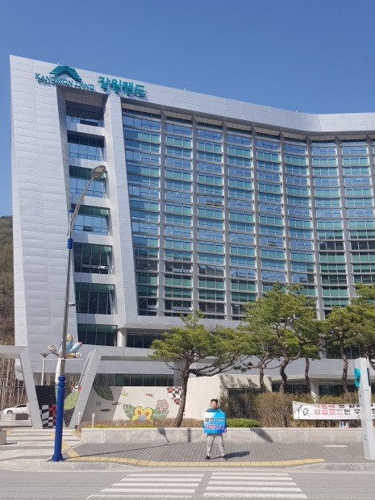

입사 경쟁률 1.2대 1 기록한 강원랜드
강원도에서 임금·복지 측면에서 최고인 강원랜드의 최근 신규채용 경쟁률 기록입니다. 게다가 강원랜드는 정년이 보장된 공기업이지요. 수십대 1이 기본인 요즘 공기업 채용률과 많이 차이나는 겁니다. 강원랜드는 최근 225명의 신입사원을 채용했습니다. 채용에 응시한 사람은 285명뿐이었죠. 서류를 낸 지원자 중 탈락자가 매우 적었습니다. 이 회사의 2016년 공채 경쟁률(28대 1)과도 격차를 보였습니다.